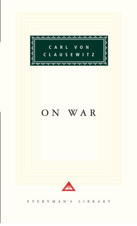
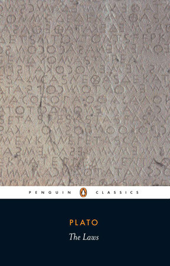

52:44 · 4 OPERE
Divagazioni sull'Occidente e la guerra.
Il filo del discorso
La riflessione riguarda il rapporto fra tecnologia, previsione e decisione militare. Il relatore contesta la fiducia che trasforma un piano in una certezza, e usa una lunga serie di esempi per sostenere che una arma più avanzata non garantisce una vittoria. Dalla guerra austro-prussiana passa alle campagne di Napoleone e Hitler, agli Stinger in Afghanistan, al Vietnam e agli interventi occidentali più recenti.
Leggi la sintesi completaRiduci la sintesi
Mette al centro addestramento, logistica, costi, numero dei mezzi e rischio nucleare; propone il negoziato come alternativa alla escalation in Ucraina. La sua tesi è che eserciti orientati a interventi limitati non possano convertirsi immediatamente in forze per una guerra estesa. Questa è una valutazione del relatore, non una ricognizione quantitativa delle capacità attuali di tutti gli alleati. La scheda distingue gli argomenti dagli esempi inesatti o non documentati: la massima sul primo contatto col nemico è di Moltke, mentre la margarina è posteriore alla campagna napoleonica del 1812. Il nucleo della discussione rimane la distanza fra mezzi disponibili e fini politici, e la responsabilità di chi presenta una scelta bellica come semplice soluzione tecnica.
I libri nel discorso

Della guerra (Vom Kriege / On War)
Identificazione probabile
Note sul riferimento
Copertina: Opera postuma, pubblicata dal 1832. Copertina On War, Everyman’s Library,25 maggio 1993,920 pagine, traduzione e introduzione di Michael Howard e Peter Paret. La edizione di riferimento non è attribuita al filmato.
Immagine autentica dell’opera, controllata visivamente; l’edizione di riferimento non è attribuita al filmato.
Clausewitz e il suo trattato militare espliciti, ma titolo reso genericamente come libro sull’arte della guerra; identificazione probabile di Vom Kriege. La massima citata appartiene a Moltke.

La macchina del tempo
Note sul riferimento
Copertina: Feltrinelli · Universale Economica, I classici
H.G. Wells e macchina del tempo nominati come opera narrativa; nessuna ristampa identificata.

Leggi (The Laws)
Note sul riferimento
Copertina: Penguin Classics,28 giugno 2005,560 pagine; traduzione, introduzione e note di Trevor J. Saunders, prefazione di Richard Stalley. Copertina della traduzione inglese; nessuna edizione attribuita al relatore.
Immagine autentica dell’opera, controllata visivamente; l’edizione di riferimento non è attribuita al filmato.
Platone e Le leggi espliciti; parafrasi sullo studio del passato, senza luogo testuale preciso.

Costituzione della Repubblica Italiana
Note sul riferimento
Copertina dell’edizione Intra aggiornata al 2023: Intra · 2023 · introduzione di Umberto Vincenti
Copertina autentica del testo integrale, aggiornata alla legge costituzionale 26 settembre 2023 n.1. È successiva al filmato del 2019 e non rappresenta la versione storica letta dal relatore. Umberto Vincenti firma l’introduzione.
Richiamo alla Costituzione e alla difesa; documento generale, non una edizione commerciale.